apb architekten
neu gedacht.
Alle Inhalte der heutigen Website – 39 Projekte, Leistungen, Team, Stellen – neu gestaltet: im apb-Schwarz und -Orange, mit dem Original-Logo, schneller, ohne Tracking und für das Handy gemacht. Zur Auswahl stehen drei Startseiten.
Ziehen Sie
den Regler.
Links die heutige Website, rechts der Vorschlag – gleiche Bildschirmgrösse, gleiche Seite.
Startseite · Desktop

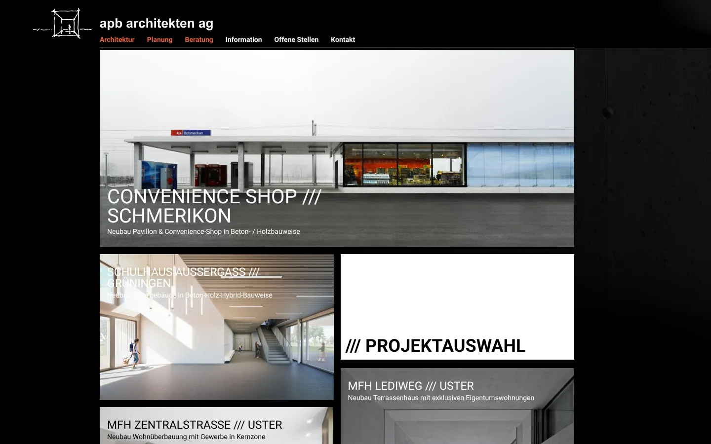
Projektseite «Schulhaus Aussergass» · Desktop
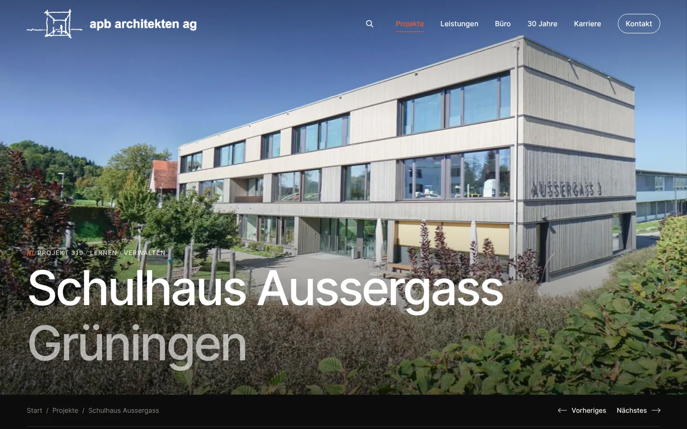
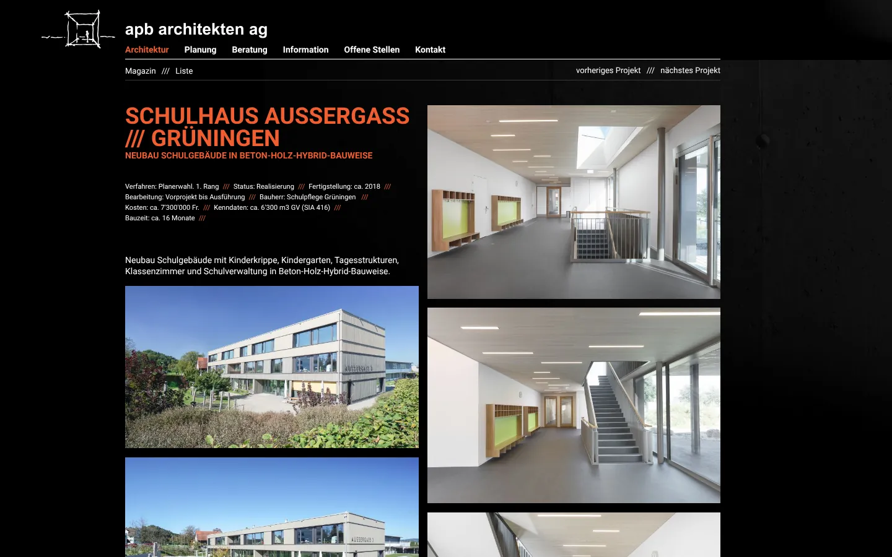
Startseite · Handy
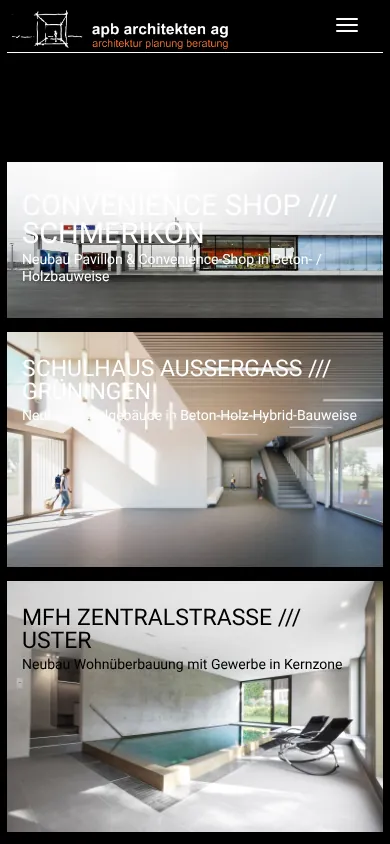
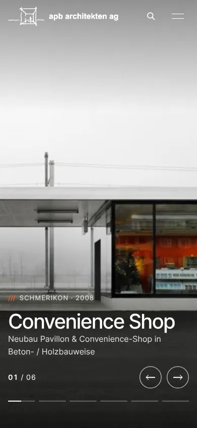
Drei Startseiten.
Ein Inhalt.
Alle Unterseiten sind identisch – nur der erste Eindruck unterscheidet sich. Jede Variante ist vollständig anklickbar.
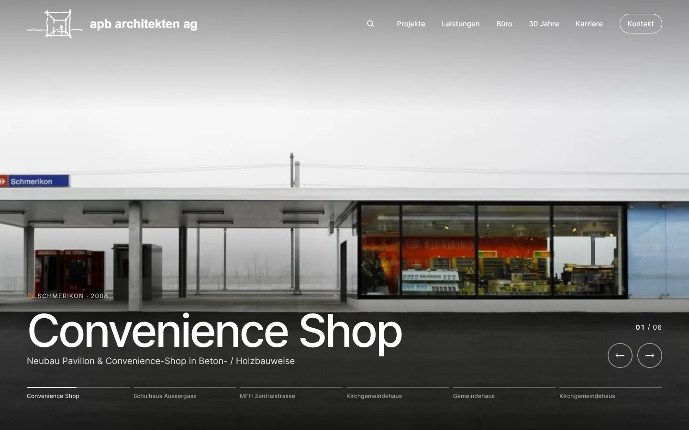
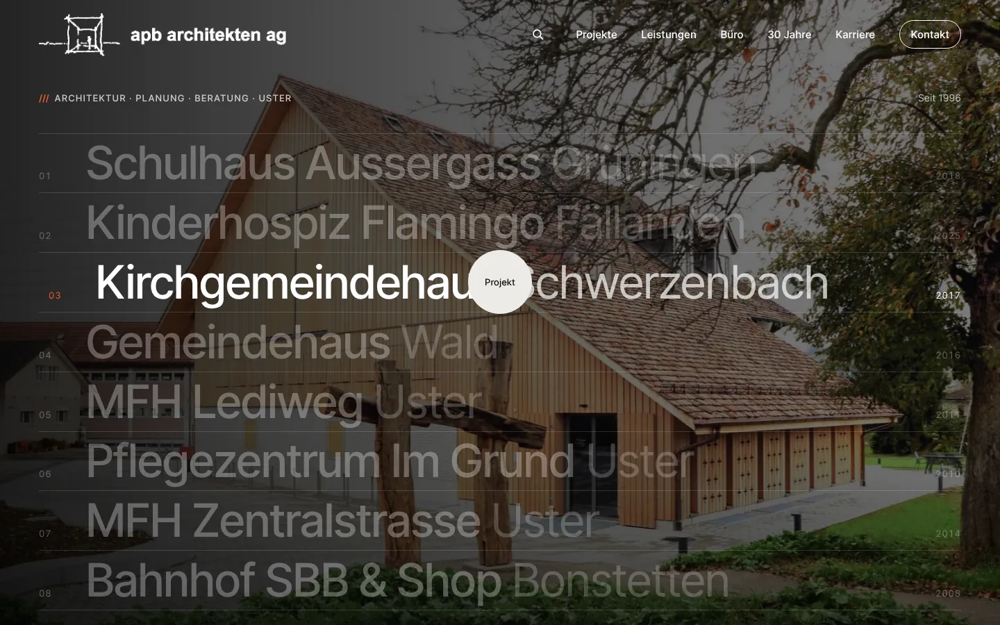
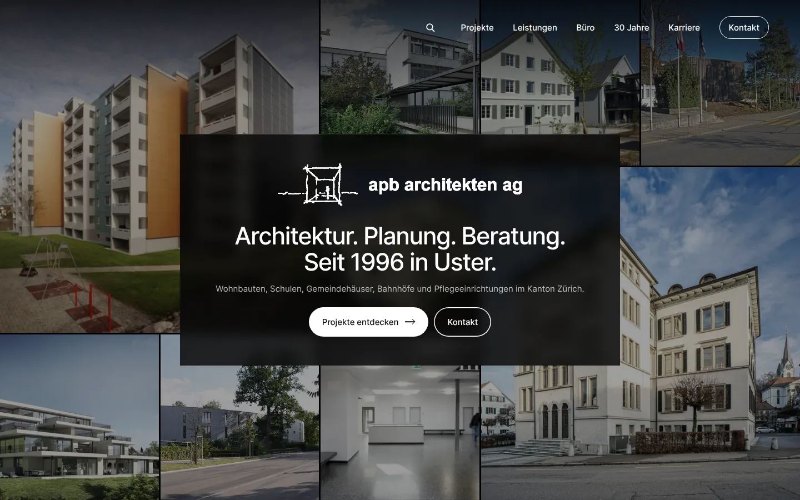
Mehr als
ein neuer Anstrich.
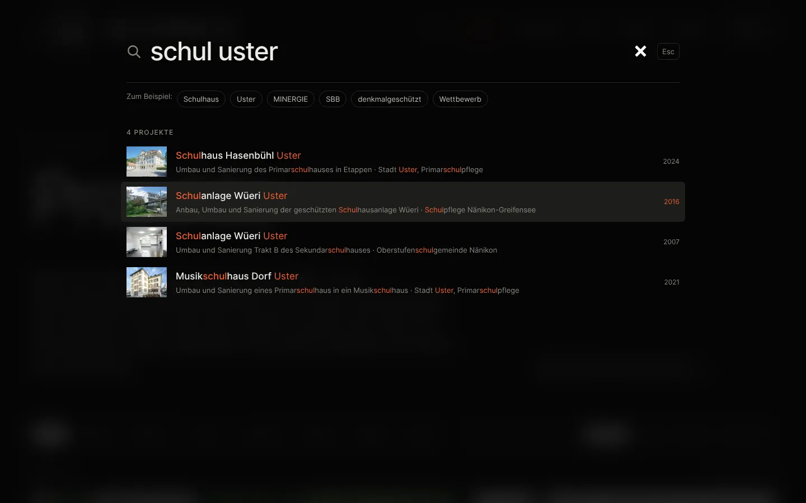
Suche über alles
Projekte, Orte, Bauherren, Leistungen, Stellen und Team – über die Lupe oder die Taste «/».
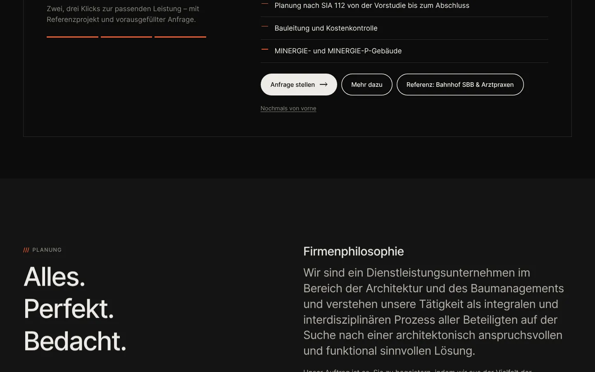
Leistungsfinder
Zwei, drei Klicks zur passenden Leistung, mit Referenzprojekt und bereits ausgefülltem Kontaktformular.
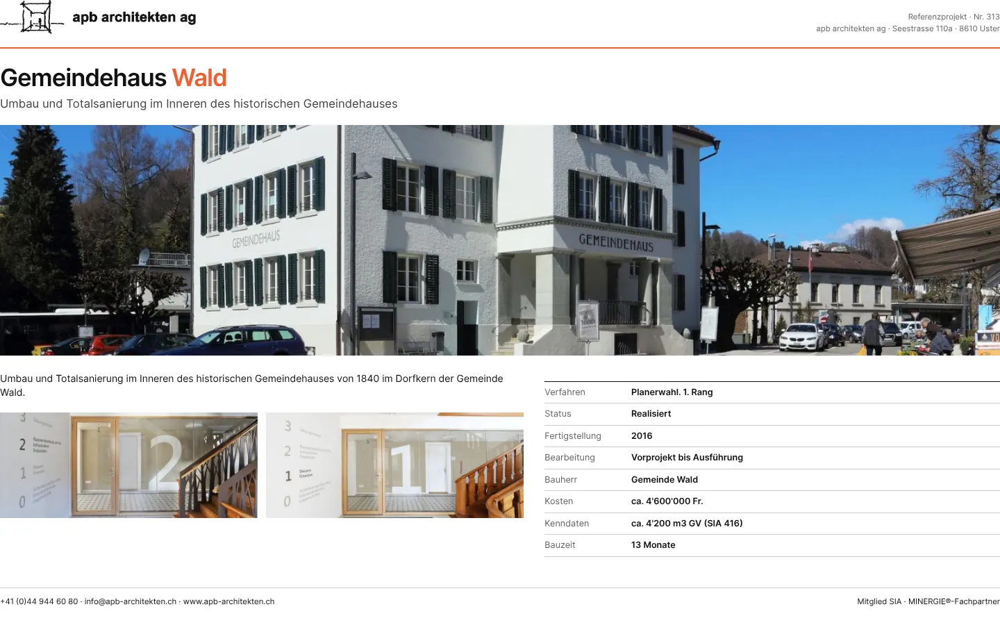
Referenzblatt als PDF
Jedes Projekt als druckfertiges A4-Blatt mit Logo, Bild und Kenndaten – für Bewerbungen und Wettbewerbe.
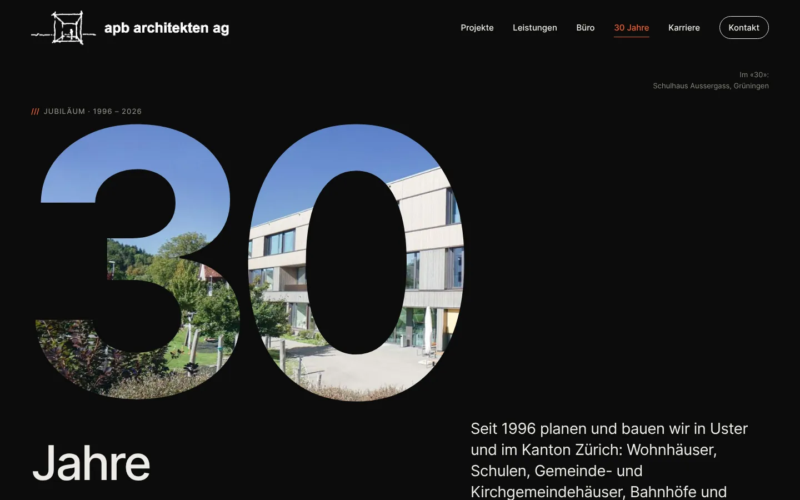
30 Jahre apb
Chronik 1996–2026 mit Meilensteinen und allen fertiggestellten Projekten pro Jahr.
- Projektübersicht mit Filter nach Thema, Suche und vier Ansichten: Raster, Liste, Karte (swisstopo), Zeitachse
- Projektseiten mit Bildergalerie im Vollbild, Kenndaten, Standortkarte und verwandten Projekten
- SIA-112-Phasen interaktiv, inklusive Kostengenauigkeit ±20 % → ±10 %
- Karriere mit allen Stellenprofilen, Bewerbungsknopf mit Referenznummer und Lehrstelle 2028
- Intro mit dem Original-Logo, das sich Strich für Strich zeichnet; fliessende Seitenübergänge
- Pflege: neue Projekte werden in einer einzigen Datei ergänzt – Bilder in einen Ordner, fertig
Die Fakten.
Messung am 17.11.2026 mit Chromium, Startseite nach vollständigem Laden.
Nächste
Schritte.
- Variante wählen (A, B oder C)
- Projektbilder in Originalauflösung und Logo als Vektordatei
- Team-Fotos und aktuelles Firmenprofil als PDF
- Impressum und Datenschutz rechtlich prüfen
- Domain umstellen – E-Mail bleibt unberührt
- Seite für Google freischalten und neu einreichen